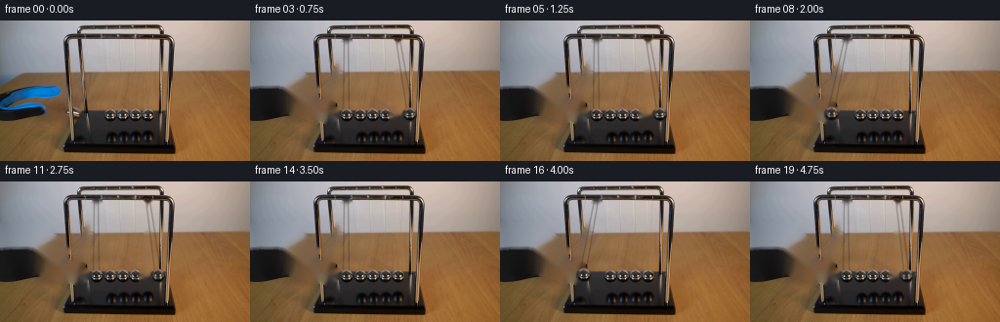
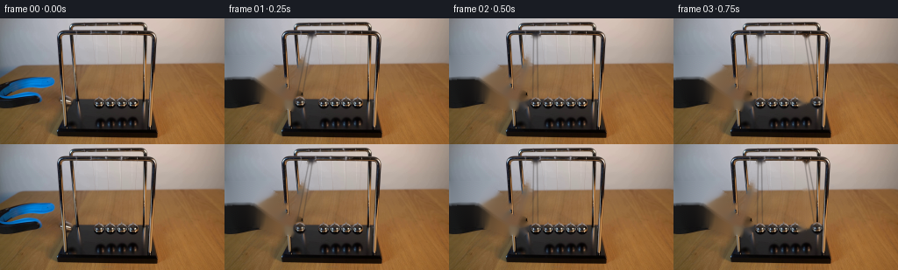

CODING AGENTS AS PIXEL WORLD MODELS
traex/GPT-5.6-Sol · 0161
点击播放 · 原生 RGB 像素
逐轮保存的候选
回放视频、检查图与代码变化。
每份候选均可单独播放。实际图片检查记录在下方工具轨迹中。
候选 01播放与检查图
点击播放 · 原生 RGB 像素


展开代码变化
--- 上一保存版本
+++ 本次保存版本
@@ -0,0 +1,177 @@
+from pathlib import Path
+import math
+import cv2
+import numpy as np
+from PIL import Image
+import artifact_io
+
+# PixelWorld case 0161: image-based, analytical Newton-cradle animation.
+# All visual material is derived from first_frame.png; only local RGB operations are used.
+CASE_DIR = Path(__file__).resolve().parent
+W, H = 256, 144
+FPS, N = 4, 20
+
+
+def inpaint_rgb(rgb, mask, radius=4):
+ bgr = cv2.cvtColor(rgb, cv2.COLOR_RGB2BGR)
+ out = cv2.inpaint(bgr, (mask > 0).astype(np.uint8) * 255, radius, cv2.INPAINT_TELEA)
+ return cv2.cvtColor(out, cv2.COLOR_BGR2RGB)
+
+
+def make_ball_sprite(source, cx=112, cy=97, radius=7.35):
+ """Take a clean photographed chrome ball and give it a soft circular matte."""
+ half = 10
+ patch = source[cy-half:cy+half+1, cx-half:cx+half+1].copy()
+ yy, xx = np.mgrid[-half:half+1, -half:half+1].astype(np.float32)
+ dist = np.sqrt(xx*xx + yy*yy)
+ alpha = np.clip((radius + 0.65 - dist) / 1.15, 0, 1)
+ # Restrict the bottom fringe slightly; the photographed balls have a compact silhouette.
+ alpha *= np.clip((radius + 0.8 - np.maximum(0, yy - 5.8)) / 1.1, 0, 1)
+ return patch, alpha.astype(np.float32)
+
+
+def composite_sprite(frame, sprite, alpha, cx, cy, opacity=1.0):
+ """Subpixel translate and alpha-composite a compact RGB sprite."""
+ h, w = alpha.shape
+ halfx, halfy = (w - 1) / 2.0, (h - 1) / 2.0
+ x0 = int(math.floor(cx - halfx))
+ y0 = int(math.floor(cy - halfy))
+ fx = (cx - halfx) - x0
+ fy = (cy - halfy) - y0
+ # Subpixel shift within the patch gives smoother arcs at this small output size.
+ M = np.float32([[1, 0, fx], [0, 1, fy]])
+ sp = cv2.warpAffine(sprite, M, (w+1, h+1), flags=cv2.INTER_LINEAR,
+ borderMode=cv2.BORDER_REPLICATE)
+ al = cv2.warpAffine(alpha, M, (w+1, h+1), flags=cv2.INTER_LINEAR,
+ borderMode=cv2.BORDER_CONSTANT, borderValue=0) * opacity
+ x1, y1 = max(0, x0), max(0, y0)
+ x2, y2 = min(W, x0+w+1), min(H, y0+h+1)
+ if x2 <= x1 or y2 <= y1:
+ return
+ sx1, sy1 = x1-x0, y1-y0
+ sx2, sy2 = sx1+(x2-x1), sy1+(y2-y1)
+ a = al[sy1:sy2, sx1:sx2, None]
+ dst = frame[y1:y2, x1:x2].astype(np.float32)
+ src = sp[sy1:sy2, sx1:sx2].astype(np.float32)
+ frame[y1:y2, x1:x2] = np.clip(dst*(1-a) + src*a, 0, 255).astype(np.uint8)
+
+
+def draw_cord(frame, anchor_x, ball_x, ball_y):
+ """Two fine suspension wires, darkened adaptively over the photographed backdrop."""
+ overlay = frame.copy()
+ wire_mask = np.zeros((H, W), np.uint8)
+ # Two near-parallel cords are characteristic of a desktop Newton's cradle.
+ for da, db in [(-2.0, -2.8), (2.0, 2.8)]:
+ p0 = (int(round(anchor_x + da)), 19)
+ p1 = (int(round(ball_x + db)), int(round(ball_y - 5.5)))
+ cv2.line(wire_mask, p0, p1, 205, 1, cv2.LINE_AA)
+ a = (wire_mask.astype(np.float32) / 255.0 * 0.43)[:, :, None]
+ # Neutral warm-grey wire: visible on the pale wall but restrained over the table.
+ wire = np.empty_like(frame, dtype=np.float32)
+ wire[:] = (55, 51, 48)
+ frame[:] = np.clip(frame.astype(np.float32)*(1-a) + wire*a, 0, 255).astype(np.uint8)
+
+
+def pendulum_y(dx, length=77.0, bottom_y=97.0):
+ return bottom_y - (length - math.sqrt(max(0.0, length*length - dx*dx)))
+
+
+def endpoint_state(t):
+ """Return moving side and horizontal displacement for an ideal, mildly damped cradle."""
+ if t <= 0.5:
+ # Released from rest on the left; gravitational acceleration into the row.
+ amp = 18.0
+ dx = -amp * math.cos(math.pi * t) # -18 at 0, 0 at .5 s
+ return 'L', dx, amp
+ # Every one-second lobe is a trip from contact to amplitude and back to contact.
+ phase_index = int(math.floor((t - 0.5) / 1.0 + 1e-8))
+ u = (t - 0.5) - phase_index
+ side = 'R' if phase_index % 2 == 0 else 'L'
+ amp = 18.0 * (0.92 ** (phase_index + 1))
+ dx = amp * math.sin(math.pi * u)
+ if side == 'L':
+ dx = -dx
+ return side, dx, amp
+
+
+def make_backgrounds(first):
+ # Remove only the blue/black grabber, held endpoint ball, and its old angled cords.
+ tool_mask = np.zeros((H, W), np.uint8)
+ # Silhouettes follow the two blue handles and dark nose visible in the source.
+ cv2.fillPoly(tool_mask, [np.array([(0,47),(45,47),(61,57),(58,68),(20,70),(0,67)], np.int32)], 255)
+ cv2.fillPoly(tool_mask, [np.array([(0,63),(47,65),(67,75),(79,87),(82,99),(68,105),(43,96),(0,91)], np.int32)], 255)
+ # Exact blue pixels and their antialiased edge are also included.
+ r, g, b = first[:,:,0].astype(np.int16), first[:,:,1].astype(np.int16), first[:,:,2].astype(np.int16)
+ blue = ((b-r > 16) & (b-g > 8) & (np.indices((H,W))[1] < 82) &
+ (np.indices((H,W))[0] > 43) & (np.indices((H,W))[0] < 103)).astype(np.uint8)*255
+ blue = cv2.dilate(blue, np.ones((5,5), np.uint8), iterations=1)
+ tool_mask = cv2.max(tool_mask, blue)
+ # The pulled sphere (partly enclosed by the jaws).
+ cv2.circle(tool_mask, (80, 95), 10, 255, -1, cv2.LINE_AA)
+ # Original left endpoint cords, from suspension rail to pulled position.
+ cv2.line(tool_mask, (97,19), (77,90), 255, 3, cv2.LINE_AA)
+ cv2.line(tool_mask, (101,19), (83,90), 255, 3, cv2.LINE_AA)
+ clean = inpaint_rgb(first, tool_mask, 5)
+
+ # Variant for a displaced right endpoint: clear its resting sphere and cords.
+ right_mask = np.zeros((H, W), np.uint8)
+ cv2.circle(right_mask, (151,97), 9, 255, -1, cv2.LINE_AA)
+ cv2.line(right_mask, (149,19), (148,91), 255, 2, cv2.LINE_AA)
+ cv2.line(right_mask, (153,19), (154,91), 255, 2, cv2.LINE_AA)
+ right_clear = inpaint_rgb(clean, right_mask, 3)
+ return clean, right_clear
+
+
+def generate():
+ first = np.asarray(Image.open(CASE_DIR / 'first_frame.png').convert('RGB'), dtype=np.uint8)
+ assert first.shape == (H, W, 3)
+ clean, right_clear = make_backgrounds(first)
+ sprite, alpha = make_ball_sprite(first)
+ frames = [first.copy()]
+
+ left_rest, right_rest = 98.0, 151.0
+ for n in range(1, N):
+ t = n / FPS
+ side, dx, amp = endpoint_state(t)
+ moving_right = (side == 'R' and abs(dx) > 0.35)
+ frame = (right_clear if moving_right else clean).copy()
+
+ # The left sphere always exists: moving during its lobe, resting against the row otherwise.
+ lx = left_rest + (dx if side == 'L' else 0.0)
+ ly = pendulum_y(lx-left_rest)
+ draw_cord(frame, left_rest, lx, ly)
+
+ # Add restrained exposure blur only during fast portions of an arc.
+ # The crisp sphere remains dominant, avoiding a synthetic multi-ball appearance.
+ if n > 1:
+ tprev = (n-1) / FPS
+ pside, pdx, _ = endpoint_state(tprev)
+ if pside == side:
+ if side == 'L':
+ px, py = left_rest+pdx, pendulum_y(pdx)
+ composite_sprite(frame, sprite, alpha,
+ lx*0.72+px*0.28, ly*0.72+py*0.28, 0.16)
+ elif moving_right:
+ px, py = right_rest+pdx, pendulum_y(pdx)
+ rx, ry = right_rest+dx, pendulum_y(dx)
+ composite_sprite(frame, sprite, alpha,
+ rx*0.72+px*0.28, ry*0.72+py*0.28, 0.16)
+ composite_sprite(frame, sprite, alpha, lx, ly, 1.0)
+
+ if moving_right:
+ rx = right_rest + dx
+ ry = pendulum_y(dx)
+ draw_cord(frame, right_rest, rx, ry)
+ composite_sprite(frame, sprite, alpha, rx, ry, 1.0)
+ # At contact the untouched photographed right ball is retained pixel-for-pixel.
+ frames.append(frame)
+
+ frames = np.stack(frames).astype(np.uint8)
+ # Contract-critical identity of frame zero.
+ frames[0] = first
+ artifact_io.save(frames, CASE_DIR)
+ return frames
+
+
+if __name__ == '__main__':
+ generate()
可观测工具轨迹
实际执行的命令与返回图片。
命令 1exit 0
/bin/bash -lc "cat prompt.txt && printf '\\n--- GENERATION RULES ---\\n' && cat GENERATION_RULES.md"
命令 2exit 127
/bin/bash -lc "find . -maxdepth 2 -type f -printf '%p\\n' | sort && printf '\\n--- image metadata ---\\n' && file first_frame.png"
命令 3exit 0
/bin/bash -lc "python - <<'PY'
from PIL import Image
import numpy as np
im=np.array(Image.open('first_frame.png').convert('RGB'))
print(im.shape,im.dtype,im.min(),im.max(),np.mean(im,axis=(0,1)),np.std(im,axis=(0,1)))
# print coarse 8x8 luma and dominant colour chars based hsv
import cv2
hsv=cv2.cvtColor(im,cv2.COLOR_RGB2HSV)
for yy in range(0,144,6):
s=''
for xx in range(0,256,4):
p=im[yy:yy+6,xx:xx+4].mean((0,1)); h=hsv[yy:yy+6,xx:xx+4].mean((0,1)); lum=p.mean()
if lum<35:c='@'
elif lum<60:c='#'
elif lum<90:c='O'
elif lum<120:c='o'
elif lum<150:c='-'
elif lum<180:c='.'
else:c=' '
s+=c
print(s)
PY"命令 4exit 0
/bin/bash -lc "python - <<'PY'
import cv2, numpy as np
from PIL import Image
im=cv2.imread('first_frame.png')
g=cv2.cvtColor(im,cv2.COLOR_BGR2GRAY)
print('Hough circles')
for p2 in [8,10,12,15,18,20]:
cs=cv2.HoughCircles(g,cv2.HOUGH_GRADIENT,dp=1,minDist=8,param1=80,param2=p2,minRadius=3,maxRadius=15)
print(p2, None if cs is None else np.round(cs[0],1).tolist())
print('lines')
ed=cv2.Canny(g,60,130)
ls=cv2.HoughLinesP(ed,1,np.pi/180,20,minLineLength=15,maxLineGap=4)
for l in sorted((ls[:,0].tolist() if ls is not None else []),key=lambda q:(q[1],q[0]))[:100]: print(l)
# palette/color info by blocks 4x4 in region
rgb=cv2.cvtColor(im,cv2.COLOR_BGR2RGB)
for y in range(0,144,8):
print('y',y,end=' ')
for x in range(0,256,8):
p=rgb[y:y+8,x:x+8].mean((0,1)).astype(int)
print('%02x%02x%02x'%tuple(p),end=' ')
print()
PY"命令 5exit 0
/bin/bash -lc "python - <<'PY'
from PIL import Image
import numpy as np
im=np.array(Image.open('first_frame.png').convert('RGB'))
# symbol color: blue B, skin/table orange t, neutral dark/grey levels
for y in range(35,132,2):
s=''
for x in range(45,186,2):
p=im[y:y+2,x:x+2].mean((0,1)); r,g,b=p
if b-r>25 and b-g>15: c='B' if max(p)>80 else 'b'
elif r-b>30 and r-g>12: c='T' if r>110 else 't'
elif max(p)-min(p)<15:
v=p.mean(); c=' ' if v>180 else ('.' if v>140 else ('+' if v>100 else ('o' if v>60 else ('#' if v>30 else '@'))))
else:
v=p.mean(); c=' ' if v>180 else (',' if v>140 else ('-' if v>100 else ('x' if v>60 else ('%' if v>30 else '&'))))
s+=c
print(f'{y:03}',s)
PY"命令 6exit 0
/bin/bash -lc "python - <<'PY'
from PIL import Image
import numpy as np
im=np.array(Image.open('first_frame.png').convert('RGB'))
# detailed greyscale at region x55:185, y0:140 every pixel, map luma; tag blue
chars='@%#*+=-:. '
for y in range(0,140):
s=''
for x in range(50,185):
r,g,b=im[y,x]; lum=.2126*r+.7152*g+.0722*b
if int(b)-int(r)>35 and int(b)-int(g)>20:c='B'
else:c=chars[min(9,int(lum)//26)]
s+=c
print(f'{y:03} {s}')
PY"命令 7exit 0
/bin/bash -lc "python - <<'PY'
import cv2,numpy as np
im=cv2.imread('first_frame.png'); g=cv2.cvtColor(im,cv2.COLOR_BGR2GRAY).astype(float)
# local horizontal residual dark
med=cv2.blur(g,(15,1)); d=med-g
for y in range(20,93,3):
pts=np.where(d[y,65:170]>12)[0]+65
# runs
rs=[]
for x in pts:
if not rs or x>rs[-1][-1]+1:rs.append([x])
else:rs[-1].append(x)
print(y,[(r[0],r[-1],round(d[y,r].max())) for r in rs])
PY"命令 8exit 0
/bin/bash -lc "python - <<'PY'
from PIL import Image
import numpy as np
im=np.array(Image.open('first_frame.png').convert('RGB'))
for y in range(84,121):
print('y',y)
for x in range(55,176):
r,g,b=im[y,x]; L=(int(r)+int(g)+int(b))//3
# two-char values?
print('0123456789ABCDEF'[L//16],end='')
print()
print('x tens')
print(''.join(str(x//10%10) for x in range(55,176)))
print(''.join(str(x%10) for x in range(55,176)))
PY"命令 9exit 0
/bin/bash -lc "python - <<'PY'
import cv2,numpy as np
im=cv2.imread('first_frame.png'); g=cv2.cvtColor(im,cv2.COLOR_BGR2GRAY).astype(float)
# remove broad horizontal/vertical illumination by Gaussian blur
bg=cv2.GaussianBlur(g,(0,0),3); d=np.abs(g-bg)
for y in range(18,93):
s=''
for x in range(88,161):
z=d[y,x]
s+= '@' if z>35 else ('#' if z>20 else ('+' if z>10 else ('.' if z>5 else ' ')))
print(f'{y:02} {s}')
PY"命令 10exit 0
/bin/bash -lc "python - <<'PY'
from PIL import Image
import numpy as np
im=np.array(Image.open('first_frame.png').convert('RGB'))
ch=' .,:;irsXA253hMHGS#9B&@'
# region x0-115 y55-115, downsample none, classify luma; blue lowercase b
for y in range(55,116):
s=''
for x in range(0,116):
r,g,b=map(int,im[y,x]); l=int(.21*r+.72*g+.07*b)
if b-r>30 and b-g>15:c='b'
else:c=ch[min(len(ch)-1,l*(len(ch)-1)//256)]
s+=c
print(f'{y:03} {s}')
print(' '+''.join(str(x//10%10) for x in range(116)))
print(' '+''.join(str(x%10) for x in range(116)))
PY"命令 11exit 0
/bin/bash -lc "python - <<'PY'
from PIL import Image
import numpy as np
im=np.array(Image.open('first_frame.png').convert('RGB')).astype(int)
for y in range(50,106):
m=(im[y,:,2]-im[y,:,0]>18)&(im[y,:,2]-im[y,:,1]>8)&(im[y,:,2]>45)
xs=np.where(m)[0]
# ranges
rr=[]
for x in xs:
if not rr or x>rr[-1][-1]+1:rr.append([x])
else:rr[-1].append(x)
print(y,[(r[0],r[-1]) for r in rr if r[-1]-r[0]>=1])
PY"命令 12exit 0
/bin/bash -lc "python - <<'PY'
from PIL import Image
import numpy as np
im=np.array(Image.open('first_frame.png').convert('RGB'))
print('gray rows')
for y in range(88,108):
print(y,' '.join(f'{int(im[y,x].mean()):3}' for x in range(103,160)))
print('\\nRGB selected centers')
for y in range(90,106):
print(y,[tuple(im[y,x]) for x in [108,110,112,114,117,121,123,125,127,130,134,136,138,140,143,147,149,151,153,156]])
PY"命令 13exit 0
/bin/bash -lc "python - <<'PY'
from PIL import Image
import numpy as np
im=np.array(Image.open('first_frame.png').convert('RGB')).astype(int)
for y in range(60,110):
s=''
for x in range(55,105):
r,g,b=im[y,x]; l=(r+g+b)//3
if b-r>22 and b-g>10:c='B'
elif max(r,g,b)-min(r,g,b)<16: c='N' if l>90 else ('n' if l>50 else '@')
elif l<35:c='#'
elif l<55:c='x'
elif l<75:c='o'
elif l<95:c='+'
elif l<120:c='-'
elif l<150:c='.'
else:c=' '
s+=c
print(f'{y:03} {s}')
print(' '+''.join(str(x//10%10) for x in range(55,105)))
print(' '+''.join(str(x%10) for x in range(55,105)))
PY"命令 14exit 0
/bin/bash -lc "python - <<'PY'
from PIL import Image
import numpy as np
im=np.array(Image.open('first_frame.png').convert('RGB'))
for y in range(72,103):
print(f'{y:03}',end=' ')
for x in range(65,110):
r,g,b=map(int,im[y,x]); L=(r+g+b)//3
c='@' if L<20 else ('#' if L<35 else ('O' if L<50 else ('o' if L<70 else ('+' if L<90 else ('-' if L<115 else ('.' if L<145 else ' '))))))
print(c,end='')
print()
PY"命令 15exit 0
/bin/bash -lc "python - <<'PY'
import cv2,numpy as np
im=cv2.imread('first_frame.png')
g=cv2.cvtColor(im,cv2.COLOR_BGR2GRAY)
for box in [(105,89,119,104),(106,90,119,104),(118,89,132,104),(107,91,118,104)]:
x1,y1,x2,y2=box;t=g[y1:y2,x1:x2]
res=cv2.matchTemplate(g[:115,:106],t,cv2.TM_CCOEFF_NORMED)
pts=[]
for k in range(10):
_,mx,_,loc=cv2.minMaxLoc(res);pts.append((round(mx,2),loc));cv2.circle(res,(loc[0]+t.shape[1]//2,loc[1]+t.shape[0]//2),10,-1,-1)
print(box,pts)
PY"命令 16exit 0
/bin/bash -lc 'cat artifact_io.py'
命令 17exit 0
/bin/bash -lc "python - <<'PY'
import cv2,numpy as np
im=cv2.imread('first_frame.png');g=cv2.cvtColor(im,cv2.COLOR_BGR2GRAY).astype(float)
# local baseline along x +-4 excluding center; dark score sample y 21..88
for xb in [72,76,80,84,88,92,96,100,104,108,112,116,120,124,128,132,136,140,144,148,152,156]:
vals=[]
for xt in range(78,166):
sc=[]
for y in range(22,89):
x=xt+(xb-xt)*(y-22)/(88-22); xi=int(round(x))
if 3<=xi<253:
base=(g[y,xi-3]+g[y,xi+3])/2
sc.append(base-g[y,xi])
vals.append((np.mean(sc),xt))
print('bottom',xb,'best',sorted(vals,reverse=True)[:6])
PY"命令 18exit 0
/bin/bash -lc "cat > generate.py <<'PY'
from pathlib import Path
import math
import cv2
import numpy as np
from PIL import Image
import artifact_io
# PixelWorld case 0161: image-based, analytical Newton-cradle animation.
# All visual material is derived from first_frame.png; only local RGB operations are used.
CASE_DIR = Path(__file__).resolve().parent
W, H = 256, 144
FPS, N = 4, 20
def inpaint_rgb(rgb, mask, radius=4):
bgr = cv2.cvtColor(rgb, cv2.COLOR_RGB2BGR)
out = cv2.inpaint(bgr, (mask > 0).astype(np.uint8) * 255, radius, cv2.INPAINT_TELEA)
return cv2.cvtColor(out, cv2.COLOR_BGR2RGB)
def make_ball_sprite(source, cx=112, cy=97, radius=7.35):
\"\"\"Take a clean photographed chrome ball and give it a soft circular matte.\"\"\"
half = 10
patch = source[cy-half:cy+half+1, cx-half:cx+half+1].copy()
yy, xx = np.mgrid[-half:half+1, -half:half+1].astype(np.float32)
dist = np.sqrt(xx*xx + yy*yy)
alpha = np.clip((radius + 0.65 - dist) / 1.15, 0, 1)
# Restrict the bottom fringe slightly; the photographed balls have a compact silhouette.
alpha *= np.clip((radius + 0.8 - np.maximum(0, yy - 5.8)) / 1.1, 0, 1)
return patch, alpha.astype(np.float32)
def composite_sprite(frame, sprite, alpha, cx, cy, opacity=1.0):
\"\"\"Subpixel translate and alpha-composite a compact RGB sprite.\"\"\"
h, w = alpha.shape
halfx, halfy = (w - 1) / 2.0, (h - 1) / 2.0
x0 = int(math.floor(cx - halfx))
y0 = int(math.floor(cy - halfy))
fx = (cx - halfx) - x0
fy = (cy - halfy) - y0
# Subpixel shift within the patch gives smoother arcs at this small output size.
M = np.float32([[1, 0, fx], [0, 1, fy]])
sp = cv2.warpAffine(sprite, M, (w+1, h+1), flags=cv2.INTER_LINEAR,
borderMode=cv2.BORDER_REPLICATE)
al = cv2.warpAffine(alpha, M, (w+1, h+1), flags=cv2.INTER_LINEAR,
borderMode=cv2.BORDER_CONSTANT, borderValue=0) * opacity
x1, y1 = max(0, x0), max(0, y0)
x2, y2 = min(W, x0+w+1), min(H, y0+h+1)
if x2 <= x1 or y2 <= y1:
return
sx1, sy1 = x1-x0, y1-y0
sx2, sy2 = sx1+(x2-x1), sy1+(y2-y1)
a = al[sy1:sy2, sx1:sx2, None]
dst = frame[y1:y2, x1:x2].astype(np.float32)
src = sp[sy1:sy2, sx1:sx2].astype(np.float32)
frame[y1:y2, x1:x2] = np.clip(dst*(1-a) + src*a, 0, 255).astype(np.uint8)
def draw_cord(frame, anchor_x, ball_x, ball_y):
\"\"\"Two fine suspension wires, darkened adaptively over the photographed backdrop.\"\"\"
overlay = frame.copy()
wire_mask = np.zeros((H, W), np.uint8)
# Two near-parallel cords are characteristic of a desktop Newton's cradle.
for da, db in [(-2.0, -2.8), (2.0, 2.8)]:
p0 = (int(round(anchor_x + da)), 19)
p1 = (int(round(ball_x + db)), int(round(ball_y - 5.5)))
cv2.line(wire_mask, p0, p1, 205, 1, cv2.LINE_AA)
a = (wire_mask.astype(np.float32) / 255.0 * 0.43)[:, :, None]
# Neutral warm-grey wire: visible on the pale wall but restrained over the table.
wire = np.empty_like(frame, dtype=np.float32)
wire[:] = (55, 51, 48)
frame[:] = np.clip(frame.astype(np.float32)*(1-a) + wire*a, 0, 255).astype(np.uint8)
def pendulum_y(dx, length=77.0, bottom_y=97.0):
return bottom_y - (length - math.sqrt(max(0.0, length*length - dx*dx)))
def endpoint_state(t):
\"\"\"Return moving side and horizontal displacement for an ideal, mildly damped cradle.\"\"\"
if t <= 0.5:
# Released from rest on the left; gravitational acceleration into the row.
amp = 18.0
dx = -amp * math.cos(math.pi * t) # -18 at 0, 0 at .5 s
return 'L', dx, amp
# Every one-second lobe is a trip from contact to amplitude and back to contact.
phase_index = int(math.floor((t - 0.5) / 1.0 + 1e-8))
u = (t - 0.5) - phase_index
side = 'R' if phase_index % 2 == 0 else 'L'
amp = 18.0 * (0.92 ** (phase_index + 1))
dx = amp * math.sin(math.pi * u)
if side == 'L':
dx = -dx
return side, dx, amp
def make_backgrounds(first):
# Remove only the blue/black grabber, held endpoint ball, and its old angled cords.
tool_mask = np.zeros((H, W), np.uint8)
# Silhouettes follow the two blue handles and dark nose visible in the source.
cv2.fillPoly(tool_mask, [np.array([(0,47),(45,47),(61,57),(58,68),(20,70),(0,67)], np.int32)], 255)
cv2.fillPoly(tool_mask, [np.array([(0,63),(47,65),(67,75),(79,87),(82,99),(68,105),(43,96),(0,91)], np.int32)], 255)
# Exact blue pixels and their antialiased edge are also included.
r, g, b = first[:,:,0].astype(np.int16), first[:,:,1].astype(np.int16), first[:,:,2].astype(np.int16)
blue = ((b-r > 16) & (b-g > 8) & (np.indices((H,W))[1] < 82) &
(np.indices((H,W))[0] > 43) & (np.indices((H,W))[0] < 103)).astype(np.uint8)*255
blue = cv2.dilate(blue, np.ones((5,5), np.uint8), iterations=1)
tool_mask = cv2.max(tool_mask, blue)
# The pulled sphere (partly enclosed by the jaws).
cv2.circle(tool_mask, (80, 95), 10, 255, -1, cv2.LINE_AA)
# Original left endpoint cords, from suspension rail to pulled position.
cv2.line(tool_mask, (97,19), (77,90), 255, 3, cv2.LINE_AA)
cv2.line(tool_mask, (101,19), (83,90), 255, 3, cv2.LINE_AA)
clean = inpaint_rgb(first, tool_mask, 5)
# Variant for a displaced right endpoint: clear its resting sphere and cords.
right_mask = np.zeros((H, W), np.uint8)
cv2.circle(right_mask, (151,97), 9, 255, -1, cv2.LINE_AA)
cv2.line(right_mask, (149,19), (148,91), 255, 2, cv2.LINE_AA)
cv2.line(right_mask, (153,19), (154,91), 255, 2, cv2.LINE_AA)
right_clear = inpaint_rgb(clean, right_mask, 3)
return clean, right_clear
def generate():
first = np.asarray(Image.open(CASE_DIR / 'first_frame.png').convert('RGB'), dtype=np.uint8)
assert first.shape == (H, W, 3)
clean, right_clear = make_backgrounds(first)
sprite, alpha = make_ball_sprite(first)
frames = [first.copy()]
left_rest, right_rest = 98.0, 151.0
for n in range(1, N):
t = n / FPS
side, dx, amp = endpoint_state(t)
moving_right = (side == 'R' and abs(dx) > 0.35)
frame = (right_clear if moving_right else clean).copy()
# The left sphere always exists: moving during its lobe, resting against the row otherwise.
lx = left_rest + (dx if side == 'L' else 0.0)
ly = pendulum_y(lx-left_rest)
draw_cord(frame, left_rest, lx, ly)
# Add restrained exposure blur only during fast portions of an arc.
# The crisp sphere remains dominant, avoiding a synthetic multi-ball appearance.
if n > 1:
tprev = (n-1) / FPS
pside, pdx, _ = endpoint_state(tprev)
if pside == side:
if side == 'L':
px, py = left_rest+pdx, pendulum_y(pdx)
composite_sprite(frame, sprite, alpha,
lx*0.72+px*0.28, ly*0.72+py*0.28, 0.16)
elif moving_right:
px, py = right_rest+pdx, pendulum_y(pdx)
rx, ry = right_rest+dx, pendulum_y(dx)
composite_sprite(frame, sprite, alpha,
rx*0.72+px*0.28, ry*0.72+py*0.28, 0.16)
composite_sprite(frame, sprite, alpha, lx, ly, 1.0)
if moving_right:
rx = right_rest + dx
ry = pendulum_y(dx)
draw_cord(frame, right_rest, rx, ry)
composite_sprite(frame, sprite, alpha, rx, ry, 1.0)
# At contact the untouched photographed right ball is retained pixel-for-pixel.
frames.append(frame)
frames = np.stack(frames).astype(np.uint8)
# Contract-critical identity of frame zero.
frames[0] = first
artifact_io.save(frames, CASE_DIR)
return frames
if __name__ == '__main__':
generate()
PY
python generate.py
python - <<'PY'
from pathlib import Path
import numpy as np
from PIL import Image
f=np.stack([np.asarray(Image.open(f'frames/{i:02}.png')) for i in range(20)])
s=np.asarray(Image.open('first_frame.png').convert('RGB'))
print('shape/dtype',f.shape,f.dtype)
print('frame0 exact',np.array_equal(f[0],s),'maxdiff',np.abs(f[0].astype(int)-s.astype(int)).max())
print('changed pixels by frame',[int(np.any(f[i]"'!=f[0],axis=2).sum()) for i in range(20)])
print('"'outputs',[(p.name,p.stat().st_size) for p in [Path('pixels.npz'),Path('inspection.png'),Path('index.html')]])
PY"命令 19exit 0
/bin/bash -lc "python - <<'PY'
import numpy as np
from PIL import Image
fs=np.stack([np.array(Image.open(f'frames/{i:02}.png')) for i in range(20)])
for i in range(1,20):
d=np.max(abs(fs[i].astype(np.int16)-fs[i-1].astype(np.int16)),2)
ys,xs=np.where(d>3)
print(f'{i:02} meanÎ={d.mean():5.2f} strong={len(xs):4} bbox=({xs.min()},{ys.min()})-({xs.max()},{ys.max()})')
# verify fixed regions remain exact from source in every frame
fixed=np.ones((144,256),bool);fixed[10:132,0:183]=False
print('fixed exterior changed',np.any(fs[:,fixed]"'!=fs[0,fixed]))
# Frame extrema and hashes
import hashlib
print('"'hash0',hashlib.sha256(fs[0].tobytes()).hexdigest())
print('unique frames',len({hashlib.sha256(x.tobytes()).digest() for x in fs}))
z=np.load('pixels.npz')['pixels']; print('npz tensor',z.shape,z.dtype)
PY"保存候选 1 份；完成命令 19 次；可验证图片返回 0 张。原始 API 响应与完整日志保留在本地。